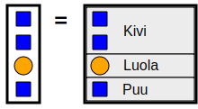
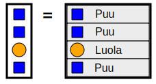
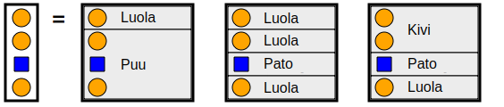
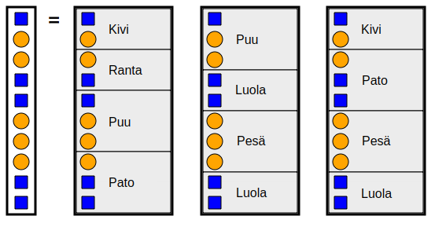

Värikoodit
Majavat muodostavat viestinsä värikoodeista.
Muodosta sanaston sanoista yksi sanayhdistelmä, joka vastaa keskellä näytettyä viestiä.
Muodosta sanaston sanoista kolme erilaista sanayhdistelmää, jotka vastaavat keskellä näytettyä viestiä.
Majavat muodostavat viestinsä värikoodeista.
Muodosta sanaston sanoista yksi sanayhdistelmä, joka vastaa keskellä näytettyä viestiä.
Muodosta sanaston sanoista kolme erilaista sanayhdistelmää, jotka vastaavat keskellä näytettyä viestiä.
Tässä on kaksi mahdollista ratkaisua.
| 1. ratkaisu: | 2. ratkaisu: |
|  |  |
Voidaan löytää nämä kolme sanayhdistelmää:

Voidaan löytää nämä kolme sanayhdistelmää:

Ratkaisu voidaan löytää kokeilemalla eri vaihtoehtoja systemaattisesti. Valitsemme ensin sanoja, jotka täsmäävät viestin alun kanssa. Kun alkuun sopiva sana on löytynyt, yritämme seuraavaksi löytää edellisen sanan perään sopivia sanoja. Ellei sopivaa jatkosanaa löydy, poistamme ratkaisun edellisen sanan, ja yritämme sen tilalle jotain toista sanaa. Tätä menettelyä jatketaan, kunnes halutut ratkaisut on löydetty tai kaikki mahdolliset ratkaisuvaihtoehdot on kokeiltu.
Edellä kuvattu ratkaisuperiaate tunnetaan tietojenkäsittelytieteessä nimellä peruuttava haku. Menetelmä on suhteellisen yksinkertainen toteuttaa ja sopii varsinkin sellaisten hakuongelmien ratkaisuun, joissa haun aikana mahdollisesti kokeiltavien mahdollisten ratkaisuvaihtoehtojen lukumäärä ei ole valtavan suuri.